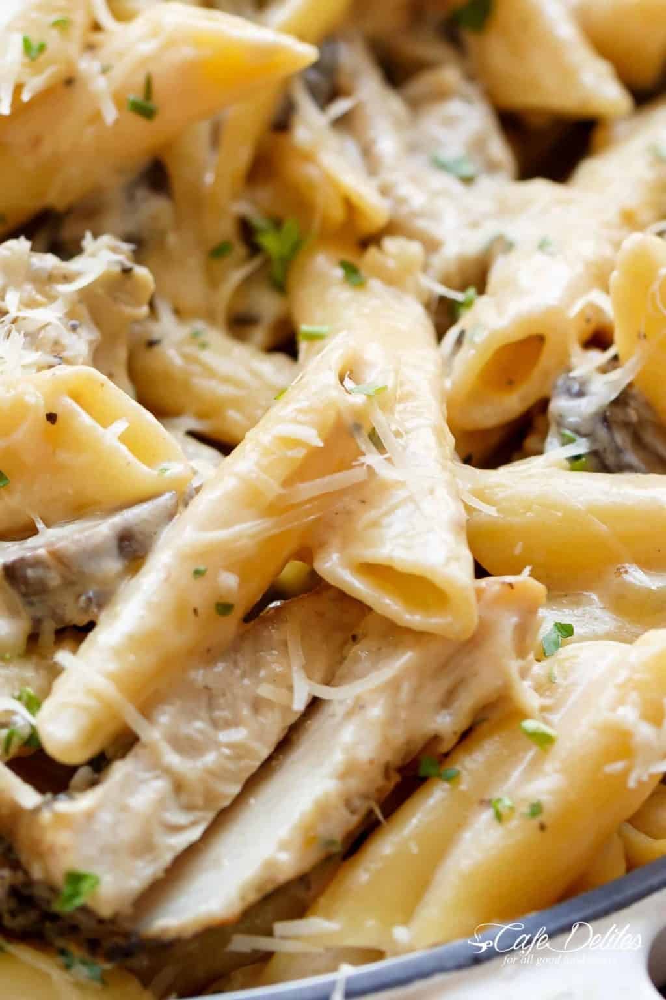

Chicken Alfredo

Description
Creamy Garlic Parmesan Chicken Alfredo is all cooked
in ONE POT! Ready and on the table in less than 20
minutes! Seared chicken is mixed through a super creamy
garlic parmesan flavoured pasta with white wine and
mushrooms! A favourite Chicken Alfredo recipe!
Ingredients
- 1 lb | 500 g boneless skinless chicken thighs,
(or breasts)
- Salt and pepper, to season
- 2 tbsp olive oil, divided
- 1 onion, diced
- 4 cloves garlic, minced (or 1 tablespoon minced
garlic)
- 1/2 cup (125 ml) dry white wine, (optional)
- 8 oz (250 g) brown mushrooms, sliced
- 2 cups (500 ml) chicken broth, or stock
-
1 1/2 cups (375 ml) heavy cream, divided (thickened
cream, light cream, evaporated milk can also be
used)
- Extra salt and pepper, to taste
- 8 oz (250 g) dry pasta, penne or fettuccini
- 1 1/2 cups freshly grated parmesan cheese
- Fresh chopped parsley, to garnish
Instructions
- Season chicken thighs with salt and pepper.
-
Heat half of the oil in a large pot over
medium-high heat. Add the chicken thighs and
sear on both sides until golden brown and cooked
through. Remove chicken and set aside.
-
Add the remaining oil in the pot. Fry onion until
transparent, stirring occasionally (about 2
minutes). Sauté the garlic until fragrant (30
seconds), then add in the white wine and allow to
reduce to half (about 4-5 minutes). Add the
mushrooms and cook for about a minute, while
stirring occasionally.
-
Pour in broth and 1 cup of cream (or evaporated
milk); season with salt and pepper. Bring to a
gentle simmer then add the pasta. Mix well, reduce
the heat to a slow simmer while stirring
occasionally, until pasta is al dente (about 15
minutes).
-
Stir in the parmesan cheese until it melts through
the sauce. Remove from heat immediately and slowly
add in 1/4-1/2 cup remaining cream if sauce it too
thick for your liking. Adjust salt and pepper to
your taste.
-
Slice the chicken into strips and stir through
the pasta. Garnish with fresh parsley and extra
parmesan, if desired